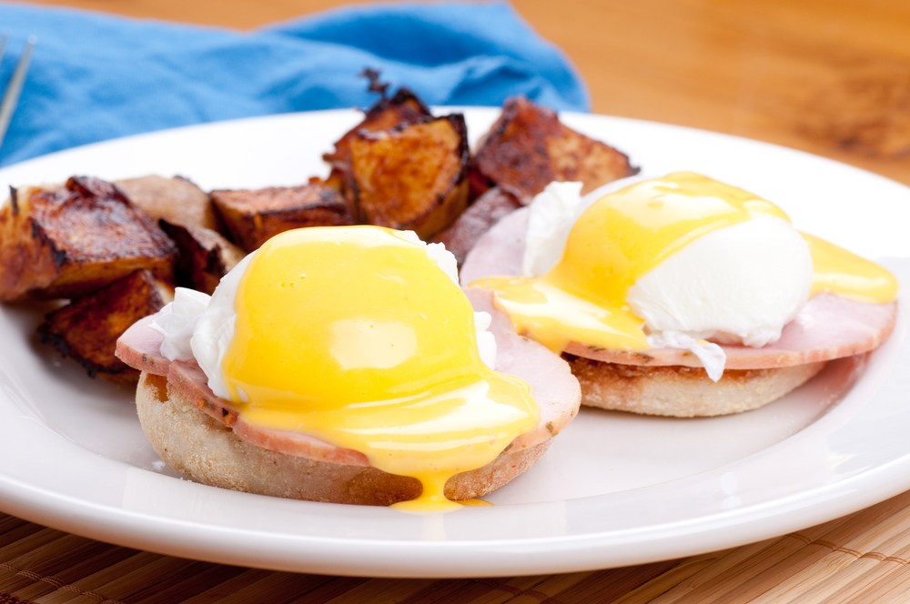
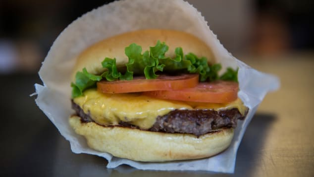
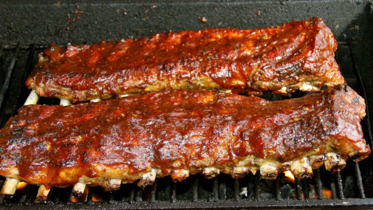

American Food
American food is a genre that is hard to define. American food was introduced and influenced by many different immigrants of different origin over the early years, which lead to a diverse variety of foods.
Eggs Benedict (Breakfast)
Photo of a Eggs Benedict.[1]
An Eggs Benedict is a good example of english muffins being used in American cuisine. This dish is found at restaurants but is also quite easy to make yourself. It is made with a poached egg, some sort of ham or bacon, all topped on an english muffin, and then eaten with hollandaise sauce.
Cheeseburgers (Lunch)
Photo of a cheeseburger.[2]
A cheeseburger is probably one of the most well known foods in the world. You can find it anywhere, your schools lunch line, a grocery store, a restaurant, everyone knows what it is. The invention of a cheeseburger was actually a mistake, when a chef in the early 1920’s tried to cover up a burn mark on a burger with a slice of cheese. Nowadays, a cheeseburger usually consists of 1 or 2 slabs of meat, some lettuce, a few tomatoes, and the signature cheese. In modern day there are many different twists to the cheeseburger but overall it is a classic in American food.
Barbecue Ribs (Dinner)
Photo of a rack of ribs.[3]
Barbecue ribs are pork or beef, slathered or smoked. These ribs are a staple at cookouts across America, and if you've ever been to one this is usually the main dish. The tangy sauce along with the juicy meat and good amount of fat makes it a delicious meal.